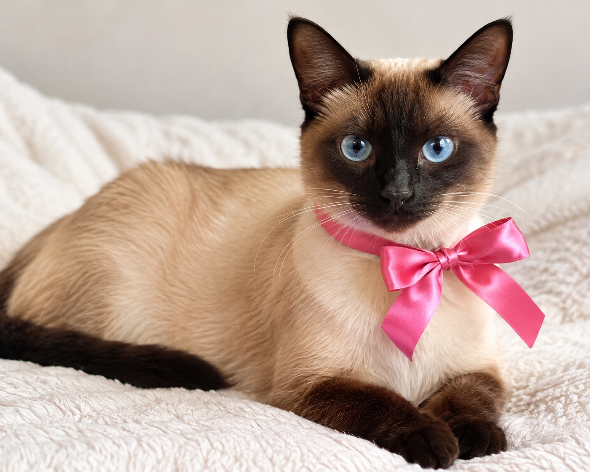
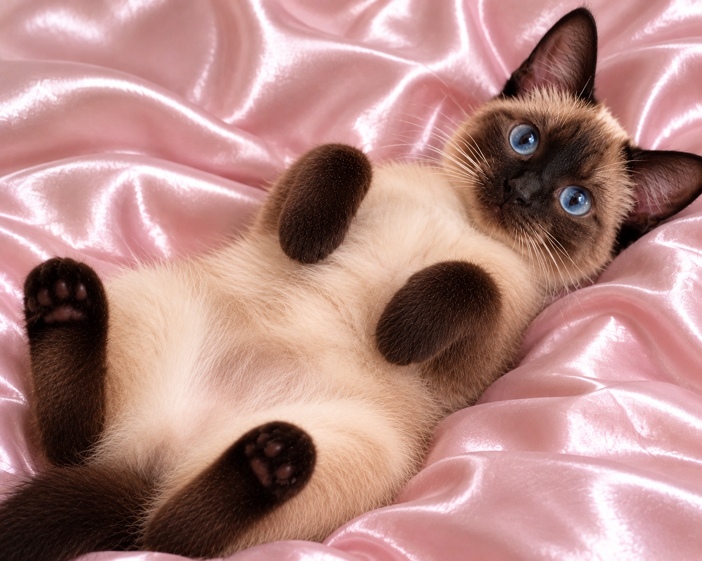
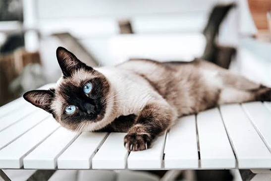
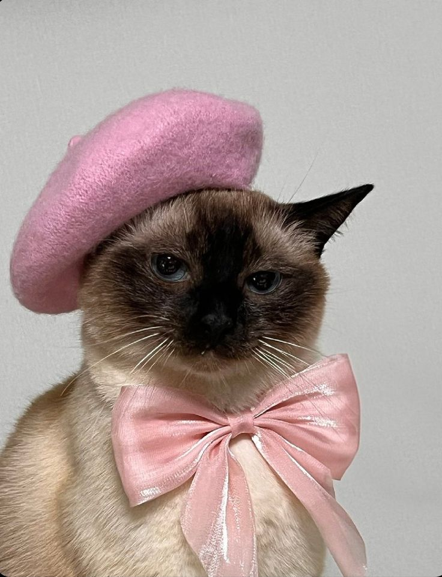
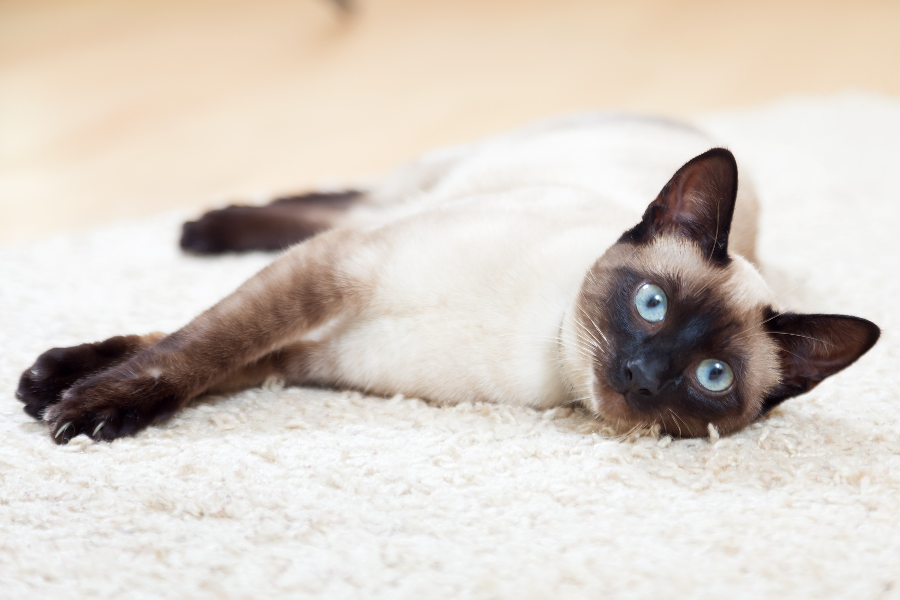

SIAMKATZE 🐾 - Elegante Jägerin

Auf dieser Website erfährst du spannende Informationen zu den Siamkatzen
Die Siamkatze ist eine elegante, auffällige und sehr kommunikative Katzenrasse aus Thailand.
STECKBRIEF📝
• Herkunft: Thailand (ehemals Siam) • Grösse: Mittelgross, schlank und elegant • Gewicht: Katzen 3–4 kg, Kater 4–5 kg • Lebenserwartung: 15 bis 20 Jahre (sehr langlebig) • Fell: Kurz, fein, eng anliegend, kaum Unterwolle • Augen: Mandelförmig, tiefes und leuchtendes Blau • Zeichnung: Point-Katze (heller Körper mit dunklen Abzeichen an Gesicht, Ohren, Pfoten und Schwanz) • Charakter: Hochkommunikativ („Plaudertasche“), extrem anhänglich, intelligent und sehr aktiv
HERKUNFT🏡
Heilige Tempelkatze: In ihrer Heimat wurde sie über Jahrhunderte hinweg im Königshaus und in buddhistischen Tempeln gehalten. Sie galt als wertvoll und wurde als Glücksbringer verehrt. Ende des 19. Jahrhunderts (um 1884) schenkte der siamesische König dem britischen Generalkonsul ein Katzenpärchen. Diese Tiere bildeten den Grundstein für die europäische und spätere weltweite Zucht.

POINTFÄRBUNG🎨
Als Point-Katze bezeichnet man Siamkatzen, deren heller Körper durch eine temperaturabhängige Pigmentstörung (Akromelanismus) an den kühleren Körperpartien – den sogenannten Points (Gesicht/Maske, Ohren, Beine und Schwanz) – dunkler gefärbt ist.

LEGENDE🗝️
• Früher schielten viele Siamkatzen und hatten einen Knick im Schwanz. Eine thailändische Legende besagt, dass die Katzen einen wertvollen königlichen Becher bewachen mussten. Sie starrten ihn so fest an, dass sie anfingen zu schielen, und wickelten ihren Schwanz so fest darum, dass er einknickte. Heute sind diese Merkmale in der Zucht als Fehler weggezüchtet.
Bildergalerie


